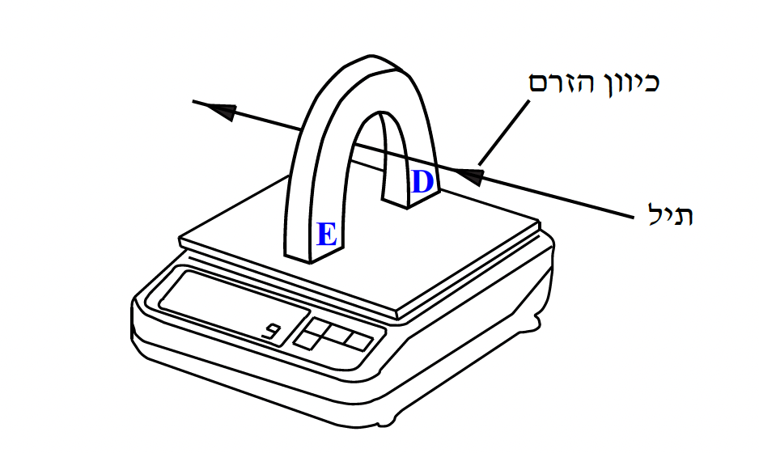

התרשים שלפניכם מתאר ניסוי שערך תלמיד. התלמיד הציב מאזניים דיגיטליים על שולחן והפעיל אותם. הוריית המאזניים הייתה 0. אחר כך הוא הציב מגנט פרסה על המשטח העליון של המאזניים. קוטבי המגנט מסומנים בתרשים באותיות D ו־E. לבסוף העביר התלמיד תיל מוליך בין קוטבי המגנט כמתואר בתרשים: התיל אינו מונח על משטח המאזניים ולא על המגנט, וכיוונו מאונך לכיוון קווי השדה המגנטי שמקורם במגנט. התיל מחובר בטור למקור-מתח ולמד-זרם (שאינם נראים בתרשים). הניחו כי השדה המגנטי באזור המאזניים קבוע, וכי האורך של קטע התיל הנמצא בשדה המגנטי הוא ℓ = 0.1 m. בתשובותיכם הזניחו את השפעות השדה המגנטי של כדור הארץ על מערכת הניסוי.

התלמיד העביר בתיל זרמים בכמה עוצמות. בכל העברת זרם הוא מדד את עוצמת הזרם בתיל ואת הוריית המאזניים. תוצאות המדידות מוצגות בשורות 1, 2 בטבלה שלפניכם.
בסוף הניסוי החסיר התלמיד מכל אחד מערכי הוריית המאזניים שמדד (שורה 2 בטבלה) את ערך הוריית המאזניים שהתקבל בעוצמת זרם אפס. תוצאות החישובים האלה הם ערכי הכוח F (שורה 3 בטבלה).
| 1 | עוצמת הזרם בתיל – I (A) | 0 | 4 | 8 | 12 | 16 | 20 |
| 2 | הוריית המאזניים (N) | 1.500 | 1.509 | 1.524 | 1.530 | 1.548 | 1.555 |
| 3 | הכוח F (N) | 0 | 0.009 | 0.024 | 0.030 | 0.048 | 0.055 |